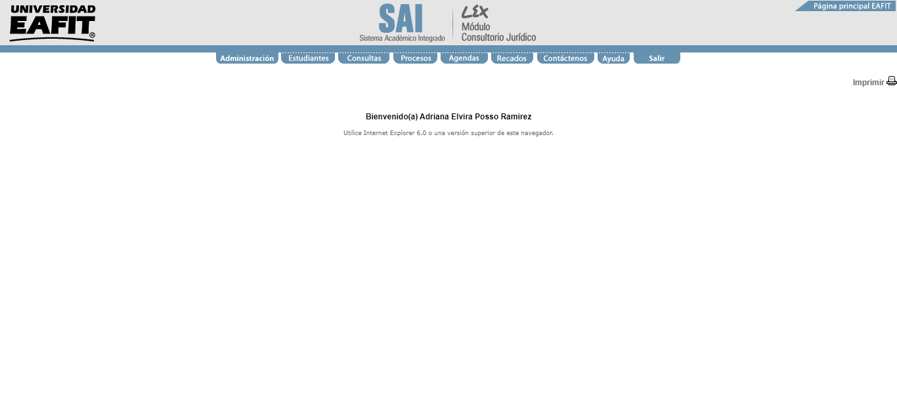
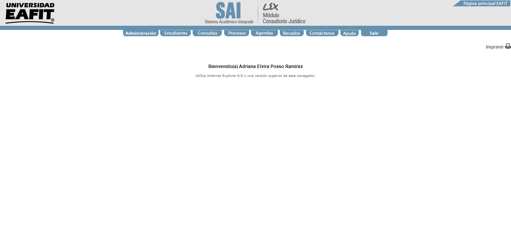

Scenario:
Given que un administrador ingresa a la opcion ingreso proceso
When el selecciona el area de competencia
And ingresa los datos del Demandado "<tipo_doc_do>" y "<num_doc_do>"
And ingresa los datos del Demandante "<tipo_doc_te>" y "<num_doc_te>"
And ingresa los datos del Apoderado Contraparte "<tipo_doc_apo>" y "<num_doc_apo>"
And ingresa los datos del Consultorio Juridico
Then el ve en pantalla el mensaje de exito del proceso ingresado
 
